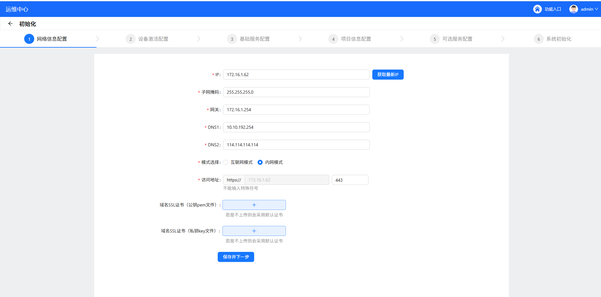
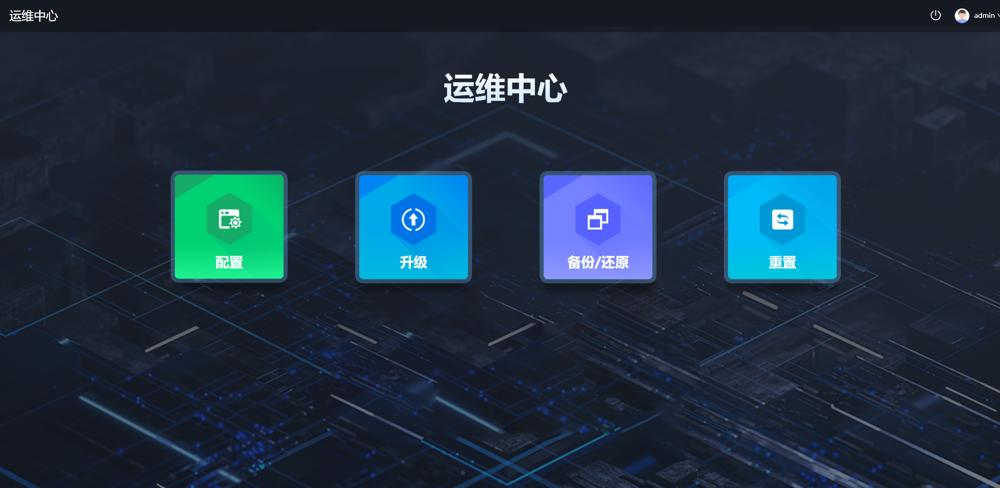

要求满足场景：
用户已经点击保存IP地址，用户换了个位置，仍然可以识别到当前ip，支持用户更新。
ip变更提醒
检测到您得云盒设备已经变更位置，对应的ip地址已经发生变化，请您前往处理
取消
配置
ip内容在每次开机后刷新获取。
若是监测到和上次保存的ip不一致，则弹窗提示
获取最新ip

ip变更提醒
检测到您得云盒设备已经变更位置，对应的ip地址已经发生变化，请您前往处理
取消
获取最新ip
ip内容在每次开机后刷新获取。
若是监测到和上次保存的ip不一致，则弹窗提示
点击【获取最新IP】跳转至【配置模块，第一步】更新最新的IP信息